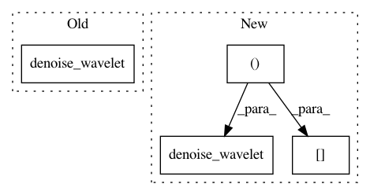

79f2a5d005021843d16134a6e71e1d178f83509c,doc/examples/filters/plot_denoise.py,,,#,51
Before Change
ax[0, 2].imshow(denoise_bilateral(noisy, sigma_color=0.05, sigma_spatial=15))
ax[0, 2].axis("off")
ax[0, 2].set_title("Bilateral")
ax[0, 3].imshow(denoise_wavelet(noisy))
ax[0, 3].axis("off")
ax[0, 3].set_title("Wavelet denoising")
After Change
from skimage.util import random_noise
original = img_as_float(data.chelsea()[100:250, 50:300])
sigma = 0.155
noisy = random_noise(original, var=sigma**2)
fig, ax = plt.subplots(nrows=2, ncols=4, figsize=(8, 5), sharex=True,
sharey=True, subplot_kw={"adjustable": "box-forced"})
plt.gray()
// Estimate the average noise standard deviation across color channels.
sigma_est = estimate_sigma(noisy, multichannel=True, average_sigmas=True)
// Due to clipping in random_noise, the estimate will be a bit smaller than the
// specified sigma.
print("Estimated Gaussian noise standard deviation = {}".format(sigma_est))
ax[0, 0].imshow(noisy)
ax[0, 0].axis("off")
ax[0, 0].set_title("Noisy")
ax[0, 1].imshow(denoise_tv_chambolle(noisy, weight=0.1, multichannel=True))
ax[0, 1].axis("off")
ax[0, 1].set_title("TV")
ax[0, 2].imshow(denoise_bilateral(noisy, sigma_color=0.05, sigma_spatial=15))
ax[0, 2].axis("off")
ax[0, 2].set_title("Bilateral")
ax[0, 3].imshow(denoise_wavelet(noisy, multichannel=True))
ax[0, 3].axis("off")
ax[0, 3].set_title("Wavelet denoising")
ax[1, 1].imshow(denoise_tv_chambolle(noisy, weight=0.2, multichannel=True))
ax[1, 1].axis("off")
ax[1, 1].set_title("(more) TV")
ax[1, 2].imshow(denoise_bilateral(noisy, sigma_color=0.1, sigma_spatial=15))
ax[1, 2].axis("off")
ax[1, 2].set_title("(more) Bilateral")
ax[1, 3].imshow(denoise_wavelet(noisy, multichannel=True, convert2ycbcr=True))
ax[1, 3].axis("off")
ax[1, 3].set_title("Wavelet denoising\nin YCbCr colorspace")
ax[1, 0].imshow(original)
In pattern: SUPERPATTERN
Frequency: 3
Non-data size: 4
Instances
Project Name: scikit-image/scikit-image
Commit Name: 79f2a5d005021843d16134a6e71e1d178f83509c
Time: 2017-01-19
Author: devel@sciunto.org
File Name: doc/examples/filters/plot_denoise.py
Class Name:
Method Name:
Project Name: scikit-image/scikit-image
Commit Name: 8589c1ecc46bf3cf33d36ff61309de440d946ad6
Time: 2017-01-17
Author: me@scottsievert.com
File Name: doc/examples/filters/plot_denoise.py
Class Name:
Method Name:
Project Name: scikit-image/scikit-image
Commit Name: efbfd7957fe31c9c4b98c332d25ee1095c9694c6
Time: 2017-01-17
Author: me@scottsievert.com
File Name: doc/examples/filters/plot_denoise.py
Class Name:
Method Name: